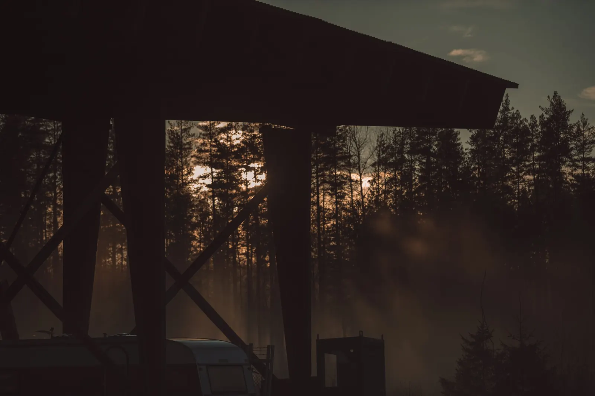
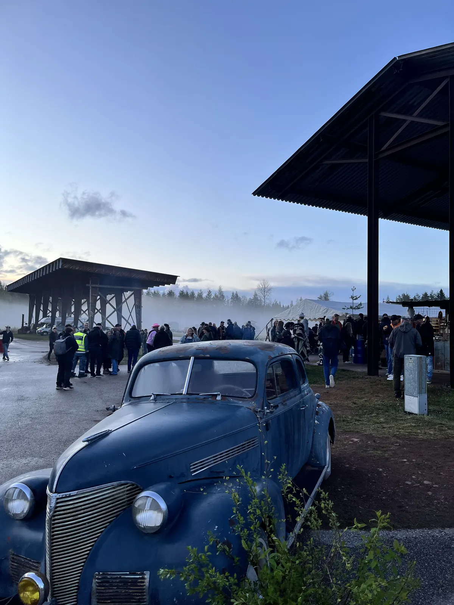

Hantverk på riktigt
Hantverkare, konstnärer och kreatörer jobbar på plats. Titta, fråga, köp – och prova på själv.


Backwoods är en hyllning till hantverket och till folket bakom det.
I Älvdalen har det alltid funnits människor som skapar, uppfinner och förädlar. En gång om året samlar vi dem på ett och samma ställe: Rotsågen, det gamla sågverket i Rot.
Under dagen visar hantverkarna vad de kan, och du får prova på själv. På kvällen blir det fest med livemusik.
Premiären 2026 bjöd på regn. Folk kom ändå.

Hantverkare, konstnärer och kreatörer jobbar på plats. Titta, fråga, köp – och prova på själv.

Mat, kaffe och något kallt att dricka. Förra året höll en uppstoppad björn koll på baren.

När hantverkarna packar ihop drar festen igång med livemusik. Vilka som spelar 2027 berättar vi snart.
Den 16 maj 2026 öppnade vi Rotsågen för första gången. Det hällregnade, och folk kom ändå. Klicka på en bild för att se den större.

Vi letar hantverkare som vill visa vad de kan på Rotsågen den 15 maj 2027. Allra helst så att besökarna får prova själva.